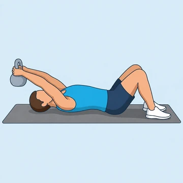

Floor Kettlebell Pullover
A pullover done lying on the floor with a kettlebell held by the handle or by the horns. The floor limits the range of motion compared to the bench version, which reduces shoulder strain and makes it a good home-gym or prehab option.
Back · Kettlebell · Beginner


Muscles worked by the Floor Kettlebell Pullover
Primary
Secondary
Also called: lats, lat, latissimus dorsi, latissimus, back wings, pec.
Equipment
Also called: kb, cast iron kettlebell, competition kettlebell, girya.
How to do the Floor Kettlebell Pullover
- Lie face-up on the floor with knees bent and feet flat.
- Hold a kettlebell by the handle with both hands above your chest, arms almost straight (slight elbow bend).
- Keeping the elbow angle fixed, lower the bell overhead in an arc until the upper arms touch the floor.
- Pull the bell back above the chest along the same arc.
- Repeat for the recommended number of repetitions.
Form tips
- The floor caps the ROM; if it feels too short, use a bench version.
- Grip the handle firmly and squeeze the lats at the top.
- Keep the lower back flat against the floor throughout.
At a glance
| Body part | Back |
|---|---|
| Category | Strength |
| Force type | Pull |
| Mechanic | Compound |
| Difficulty | Beginner |
| Equipment | Kettlebell |
| Goals | Hypertrophy |
| Tags | Pull day |
| MET | 6.0 (metabolic equivalent, for calorie estimates) |
| Unilateral | No |
| Bodyweight | No |
| Dataset id | floor-kettlebell-pullover |
Floor Kettlebell Pullover in German & Spanish
| German | Boden Kettlebell Pullover |
|---|---|
| Spanish | Pullover con Pesa Rusa en Suelo |
Descriptions, instructions and tips ship in all three languages in the JSON.
Related exercises
Exercise data (JSON)
The record below is exactly what exercises.json ships for this exercise — names, descriptions, instructions and tips in English, German and Spanish.
{
"id": "floor-kettlebell-pullover",
"name_en": "Floor Kettlebell Pullover",
"name_de": "Boden Kettlebell Pullover",
"name_es": "Pullover con Pesa Rusa en Suelo",
"description_en": "A pullover done lying on the floor with a kettlebell held by the handle or by the horns. The floor limits the range of motion compared to the bench version, which reduces shoulder strain and makes it a good home-gym or prehab option.",
"description_de": "Ein Pullover liegend auf dem Boden mit einer Kettlebell am Griff oder an den Hörnern. Der Boden begrenzt die Bewegungsamplitude im Vergleich zur Bankversion, was die Schulterbelastung reduziert und die Übung zu einer guten Heim- oder Prehab-Option macht.",
"description_es": "Un pullover realizado tumbado en el suelo con una pesa rusa sujetada por el asa o por las asas laterales. El suelo limita el rango de movimiento en comparación con la versión en banco, lo que reduce la tensión en los hombros y lo convierte en una buena opción para entrenar en casa o como ejercicio de prehabilitación.",
"category": "strength",
"force_type": "pull",
"mechanic": "compound",
"difficulty": "beginner",
"equipment": "kettlebell",
"body_part": "back",
"primary_muscles": [
"latissimus_dorsi",
"pectoralis_major"
],
"secondary_muscles": [
"serratus_anterior",
"triceps_brachii"
],
"goals": [
"hypertrophy"
],
"tags": [
"pull_day"
],
"variation_group": "pullover",
"is_unilateral": false,
"is_bodyweight": false,
"instructions_en": [
"Lie face-up on the floor with knees bent and feet flat.",
"Hold a kettlebell by the handle with both hands above your chest, arms almost straight (slight elbow bend).",
"Keeping the elbow angle fixed, lower the bell overhead in an arc until the upper arms touch the floor.",
"Pull the bell back above the chest along the same arc.",
"Repeat for the recommended number of repetitions."
],
"instructions_de": [
"Lege dich mit gebeugten Knien und flachen Füßen auf den Rücken.",
"Halte eine Kettlebell am Griff mit beiden Händen über der Brust, Arme fast gestreckt (leichte Ellbeugung).",
"Halte den Ellbogenwinkel konstant und senke die Kettlebell im Bogen über den Kopf, bis die Oberarme den Boden berühren.",
"Ziehe die Kettlebell entlang desselben Bogens zurück über die Brust.",
"Für die empfohlene Wiederholungszahl wiederholen."
],
"instructions_es": [
"Túmbate boca arriba en el suelo con las rodillas flexionadas y los pies planos.",
"Sujeta una pesa rusa por el asa con ambas manos sobre el pecho, brazos casi extendidos (ligera flexión de codos).",
"Manteniendo el ángulo de los codos fijo, baja la pesa hacia atrás en arco hasta que los brazos toquen el suelo.",
"Tira de la pesa de vuelta sobre el pecho siguiendo el mismo arco.",
"Repite el número de repeticiones recomendado."
],
"tips_en": [
"The floor caps the ROM; if it feels too short, use a bench version.",
"Grip the handle firmly and squeeze the lats at the top.",
"Keep the lower back flat against the floor throughout."
],
"tips_de": [
"Der Boden begrenzt die Amplitude; falls sie zu kurz wirkt, nutze die Bankversion.",
"Greife den Griff fest und spanne den Latissimus oben an.",
"Halte den unteren Rücken während der gesamten Übung flach auf dem Boden."
],
"tips_es": [
"El suelo limita el rango de movimiento; si te parece demasiado corto, usa la versión en banco.",
"Agarra el asa con firmeza y aprieta los dorsales en la parte alta.",
"Mantén la zona lumbar pegada al suelo durante todo el ejercicio."
],
"met": 6.0,
"images": {
"flat": {
"start": "images/flat/floor-kettlebell-pullover-start.webp",
"peak": "images/flat/floor-kettlebell-pullover-peak.webp"
}
}
}Fetch just this exercise
const { exercises } = await fetch(
"https://exercise-dataset.com/exercises.json"
).then(r => r.json());
const ex = exercises.find(e => e.id === "floor-kettlebell-pullover");Free for personal and commercial in-app use with attribution (“Exercise data by RepDB”) — see the license and ready-made attribution snippets. Redistributing the data as a dataset or API is not permitted.